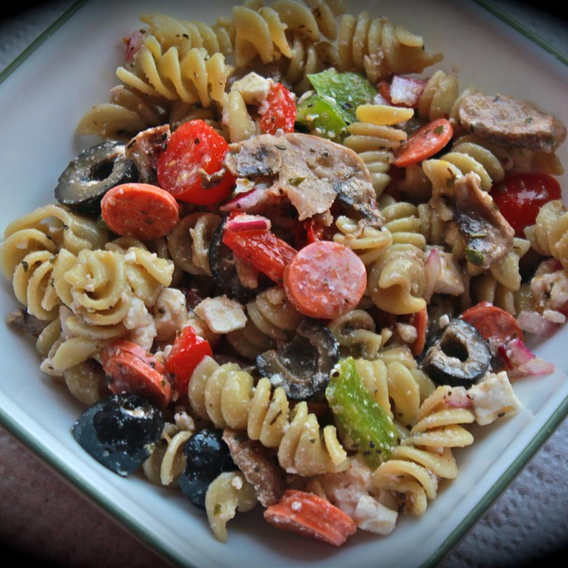

Pasta Salad

Description
This is a great make-ahead pasta salad!
Per Serving: 746 calories; protein 22.1g; carbohydrates 40.4g; fat 56.1g; cholesterol 69.7mg; sodium 1278.7mg.
Ingredients
- 1/2 cup olive oil
- 1/2 cup red wine vinegar
- 1 1/2 teaspoons garlic powder
- 1 1/2 teaspoons dried basil
- 1 1/2 teaspoons dried oregano
- 3/4 teaspoon ground black pepper
- 3/4 teaspoon white sugar
- 2 1/2 cups cooked elbow macaroni
- 3 cups fresh sliced mushrooms
- 15 cherry tomatoes, halved
- 1 cup sliced red bell peppers
- 3/4 cup crumbled feta cheese
- 1/2 cup chopped green onions
- 1 (4 ounce) can whole black olives
- 3/4 cup sliced pepperoni sausage, cut into strips
Steps
- In a large bowl, whisk together olive oil, vinegar, garlic powder, basil, oregano, black pepper, and sugar.
- Add cooked pasta, mushrooms, tomatoes, red peppers, feta cheese, green onions, olives, and pepperoni.
- Toss until evenly coated.
- Cover, and chill 2 hours or overnight.